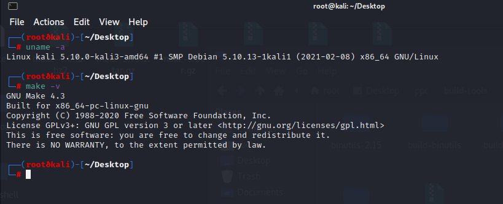
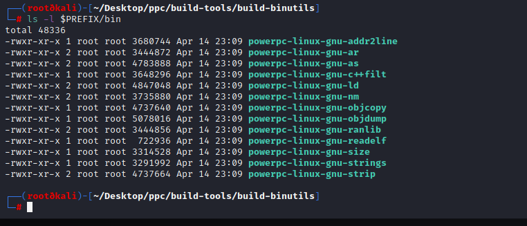
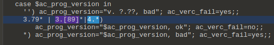
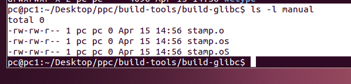
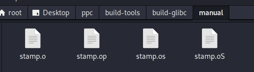

glibc2.3.2-gcc3.4.5
条评论前言
目标环境设备有些年代，linux环境： gcc-3.4.3 ，glib2.3.3 ，kernel2.6.10
glibc-2.3.3 是 2004-2005间发布的一个版本。非常的旧。所有编译过程存在很多问题。
我这里并没有选择 glibc-2.3.3 ，而选择了 glibc-2.3.2。在我的编译过程中发现 glibc-2.3.3 的编译错误会更多，解决起来更麻烦。
虚拟机环境
需要准备两台虚拟机。具体配置如下。
kali2.0
kali 的环境如下。

需要注意：这里的 make 是 4.3 版本。我是root用户，这点很重要，后续编译有个报错，其实就是需要root用户的权限
源
1 | deb http://mirrors.aliyun.com/kali kali-rolling main non-free contrib |
ubuntu12 - 32bit
ubuntu环境如下。
make版本是 3.81
源
1 | deb http://mirrors.aliyun.com/ubuntu/ trusty main restricted universe multiverse |
这里没有说 kali 与 ubuntu 需要安装的包，在编译过程种遇到缺少什么包，就安装即可。这些包没有特殊之处。注意自己换一下国内源，上面给出了。
编译过程具体步骤
首先下载需要的源码。
linux-2.6.10.tar.bz2：https://mirrors.edge.kernel.org/pub/linux/kernel/v2.6/
binutils-2.15.tar.bz2： https://ftp.gnu.org/gnu/binutils/
binutils-2.23.tar.bz2： https://ftp.gnu.org/gnu/binutils/
gcc-3.4.5.tar.bz2：https://ftp.gnu.org/gnu/gcc/gcc-3.4.5/
glibc-2.3.2.tar.bz2：https://ftp.gnu.org/gnu/glibc/
glibc 补丁：https://www.linuxfromscratch.org/patches/downloads/glibc/
glibc的补丁就下载 2.3.2 版本的补丁。后续还有补丁我会提到。
记得还要下载 glibc-linuxthreads-2.3.2.tar.bz2 ：https://ftp.gnu.org/gnu/glibc/
1 kali2.0
无论是 kail 还是 ubuntu 下，都首先要进行如下操作。
在桌面上创建 ppc 文件夹
1 | mkdir ppc |
在 ppc 里面创建如下一些文件夹
1 | cd ppc |
build-tools：存放 gcc glibc binutils 的源码 ，下载好的 gcc glibc binutils 的源码以及补丁这些，全放在该目录下
kernel：用来放内核，下载的所有文件中，只有 linux-2.6.10.tar.bz2 放在该目录。
tools：最后编译好的工具存放在这，这是空目录。
进入 build-tools 目录，再次创建一些文件夹
1 | cd build-tools |
build-binutils ：用来编译 binutils
build-boot-gcc：用来编译临时的 gcc
build-gcc：用来编译最后和 glibc关联起来的 gcc
build-glibc：用来编译 glibc
gcc-patch：放 gcc 的补丁
然后，在当前 bash 窗口下设置环境变量，后续的所有操作都在这一个 bash 窗口下进行。
1 | export PRJECT=ppc |
注意这里的路径设置 PRJROOT=/root/Desktop/，这是我的环境路径，根据情况要自行更改。
1.1 linux-2.6.10.tar.bz2
首先去 kernel 下，解压 linux-2.6.10.tar.bz2
进入linux-2.6.10
1 | cd linux-2.6.10 |
执行如下命令：
1 | make ARCH=ppc CROSS_COMPILE=powerpc-linux-gnu- menuconfig |
这一步的命令，目的是生成对应架构的内核头文件。若这一步没有问题，那么在 /ppc/kernel/linux-2.6.10/include/linux/ 目录下，可以看到有个 version.h 文件，内容如下。
如果，操作完之后，发现没有生成 version.h。那么，你再次执行一下make命令。
1 | make |
接着创建文件夹。这一步用来生成存放内核头文件的目录，操作成功递归创建如下的目录：/ppc/tools/powerpc-linux-gnu/include/
1 | mkdir -p $TARGET_PREFIX/include |
然后，创建软连接，链接内核头文件到 /ppc/tools/powerpc-linux-gnu/include/ 目录下。
命令：
1 | ln -s $PRJROOT/kernel/linux-2.6.10/include/linux $TARGET_PREFIX/include/linux |
kernel的操作，到处结束。
注意的点：
在环境变量设置正确的情况下，上面使用命令的操作过程中，只能可能在执行 make ARCH=ppc CROSS_COMPILE=powerpc-linux-gnu- menuconfig 命令时，会出现失败的情况。
- 一般是缺少库文件。缺少库文件，就去安装。具体安装什么，谷歌即可解决问题。
- 另外，就是权限问题。那么把自己切换成 root 即可。
我的 kali 机器开启了 root 用户，我就是用root用户登录的。所以，上述的所有操作都在 root 权限下进行的。之所以提到权限的问题，是因为后续的 ubuntu 配置的时候，会遇到一些奇怪的报错，有时候就是权限的问题。
1.2 binutils-2.15.tar.bz2
这一步来编译 binutil 工具。首先，进入 build-tools ，解压 binutils-2.15.tar.bz2。
1 | cd build-tools |
然后进入build-binutils目录配置和编译binutils。
1 | cd build-binutils |
然后安装
1 | make |
make 中如果出现错误，一般也是缺包。缺什么安装什么。举个列子：
缺少 lex ，安装：
1 | apt install flex |
成功后在 /ppc/tools/bin/ 下，就能看到编译的 binutil 工具。

编译 binutils 一般不会出现错误。说明这个工具的兼容性是非常不错的。我编译了无数次，没有遇到这个工具出错。错误全在 gcc 和 glibc 的编译阶段，后面都会提到。
1.3 gcc-3.4.5.tar.bz2
从编译 gcc 开始就会有各种稀奇古怪的错了。下面一步一步来。
首先，还是解压。
1 | cd build-tools |
gcc 不要打补丁，接着切换目录到 build-boot-gcc
1 | cd build-boot-gcc |
然后编译 gcc ，命令如下：
1 | ../gcc-3.4.5/configure --target=$TARGET --prefix=$PREFIX --disable-shared --without-headers --with-newlib --enable-languages=c --disable-decimal-float --disable-libgomp --disable-libmudflap --disable-libssp --disable-threads --disable-multilib --disable-werror |
这一步的命令非常关键，不能多不能少，一个参数都不要改。
不出意外的情况下，gcc 会编译成功。然后安装。
1 | make |
成功的话如下：
题外话：这里的操作，只适合编译 gcc 4.0 及其以下的版本。若，你要编译 4.1 及以上的版本，还要在添加 gmp ，mpc，mpfr 的代码
gmp：https://ftp.gnu.org/gnu/gmp/
mpc：https://ftp.gnu.org/gnu/mpc/
mpfr：https://ftp.gnu.org/gnu/mpfr/
但是，要选择合适的 gmp，mpc，mpfr 版本。那么，哪些是合适的，我没有一一测试过。我只编译过 gcc-4.7.3，我这里给出我编译 gcc-4.7.3对应的版本：
1 | gmp-5.0.2 |
具体操作，将上述3个源代码解压，然后移动到 gcc 源码目录下
1 | build-boot-gcc]$ mv gmp-5.0.2 ./gcc-4.7.3/gmp |
然后使用相同的命令进行配置 configure，然后安装。
1 | build-boot-gcc]$ ../gcc-4.7.3/configure --target=$TARGET --prefix=$PREFIX --disable-shared --without-headers --with-newlib --enable-languages=c --disable-decimal-float --disable-libgomp --disable-libmudflap --disable-libssp --disable-threads --disable-multilib --disable-werror |
1.4 glibc-2.3.2.tar.bz2
编译 glibc 是问题最对的。首先，还是解压。
1 | cd build-tools |
gclibc 有错，需要打补丁，所以这一步先打个补丁。
之前下载的补丁有：
- glibc-2.3.2-inlining_fixes-2.patch
- glibc-2.3.2-sscanf-1.patch
- glibc-2.3.2-test_lfs-1.patch
打上补丁
1 | cd glibc-2.3.2 |
接着，解压 glibc-linuxthreads-2.3.2.tar.bz2
1 | cd build-tools |
把解压出来的 linuxthreads，linuxthreads_db 移动到 glibc-2.3.2 的目录下
1 | mv linuxthreads glibc-2.3.2 |
然后切换目录到 build-glibc
1 | cd build-glibc |
配置 configure
1 | CC=powerpc-linux-gnu-gcc ../glibc-2.3.2/configure --host=$TARGET --prefix=$PREFIX --enable-add-ons --with-headers=$TARGET_PREFIX/include libc_cv_forced_unwind=yes libc_cv_c_cleanup=yes libc_cv_arm_tls=yes --disable-werror |
这里，会报告一个错误，说 make 版本太旧。解决办法：
用编辑器打开 glibc-2.3.2/configure 文件，我在kali上装了 010editor ，所以我用的 010editor 打开它。
搜索关键字 3.[89] ，如图。
这里是校验 make 版本的，给它改了，改为：3.[89]*|4.*)

修改完，保存。
切换到 build-glibc ，继续 make。
接着会遇到第二个错误，如图。
它是说 version-info.h 缺少双引号，解决办法：
找到 /root/Desktop/ppc/build-tools/build-glibc/csu/version-info.h 文件，编辑它。
它第1-4行都缺一个双引号，给他加上就行。
保存之后，继续执行 make。
这个时候，会遇到一个很奇怪的错误。如下图。
这个错误，产生的原因是 make 版本导致的。当前的 kali 下，我的 make 是 4.3 版本。如果使用 3 点几版本的 make 就不会有这个错误。但是，我尝试过编译 3.79，3.80，3.81，3.82 这 4 个版本的 make 来替换当前系统的。这会产生新的错误。 所以，我不建议你替换 make 去这样做。 那么，到此我们 kali 的操作到这里就停止。我们去 ubuntu12 下，编译出这个 stamp.o ，然后移植到 kali 下。
kali 下这个 bash 窗口不要关掉，当我们从 Ubuntu 下把 stamp.o 拷贝到这里之后，需要继续执行 make。
### 2 ubuntu 12 - 32bit
这里切换到 ubuntu 来操作了。
同样的步骤，首先创建 pcc 目录，以及需要的目录。然后，设置环境变量
1 | export PRJECT=ppc |
注意，ubuntu 下编译的 binutil 工具，选择的版本是 binutils-2.23.tar.bz2
因为，选择低版本的 binutils 时，在编译后续的 gcc 会报错。错误是说：ar 工具会导致缓冲区泄漏。
所以，需要选择高版本的 binutils。
2.1 kernel
还是先编译 Kernel。
1 | cd kernel |
创建头文件的软链接
1 | mkdir -p $TARGET_PREFIX/include |
2.2 binutils-2.23.tar.bz2
切换目录，编译 binutil 工具。具体操作与 kali 下一样。
1 | cd build-tools |
make途中遇到报错，说缺少 lex 包。安装一下
1 | sudo apt-get install flex |
安装时遇到如下：
保持默认选择，no 就行。接着出现下一个界面就选 ok。
最后工具如下。
2.3 gcc-3.4.5.tar.bz2
编译gcc
1 | cd build-tools |
遇到一个错误：
这实际上是权限不够。不过，这里不需要切换成root用户去做。我们去修改源文件。
找到文件 gcc-3.4.5/gcc/collect2.c ，编辑它。
全文搜索关键字 O_CREAT ，找到如下位置。
在后面添加 , 0755 ，如图。
完成之后如图。
2.4 glibc-2.3.2.tar.bz2
编译glibc
1 | cd build-tools |
make 遇到的第二个问题，如图。
这个是源代码的错误。而且后续 sock 模块下好几个文件都有这个错误。下面直接说如何解决。
- 找到文件：/glibc-2.3.2/sysdeps/unix/sysv/linux/bind.S ，如图。
注释掉第一行，如图。
- 找到文件：/glibc-2.3.2/sysdeps/unix/sysv/linux/listend.S ，注释掉第一行。
- 找到文件：/glibc-2.3.2/sysdeps/unix/sysv/linux/getsockname.S ，注释掉第一行。
- 找到文件：/glibc-2.3.2/sysdeps/unix/sysv/linux/setsockopt.S ，注释掉第一行。
修改完之后，记得保存。然后继续执行 make。
稍微等待一段时间，会再次报错，如下图。
这个错误，我没有找到具体的原因。我猜测还是 make 版本的原因。
我没有找到没有解决办法，当然也不需要解决。
因为，我们在 ubuntu 上进行编译的目的是获得 /build-tools/build-glibc/manual/stamp.o
此时，查看一下是否生成了 /build-tools/build-glibc/manual/stamp.o ，如图。

从图上看到，已经生成了。那么，把 manual 目录打包，然后拷贝出来，放到 kali 的 /build-tools/build-glibc/ 下。
3 kali
继续回到kali来操作
去 kali 下看看，记得位置放在：/ppc/build-tools/build-glibc
然后解压一下。
然后，回到刚刚的没有关掉的 bash 窗口，如图。
继续执行 make。会继续抱一个错误，说找不到 stamp.op
那么，这个错误也好解决，复制一份 stamp.o ，并且改名未 stamp.op 即可。
如图。

然后继续执行 make ，不出意外应该就成功编译出 glibc 库了。如图。
然后进行安装，命令：
1 | make install_root=$TARGET_PREFIX prefix="" install |
如图。
4 编译完整的gcc
这次我们需要编译带了 glibc2.3.2 库的 gcc。
首先，需要修改 /ppc/tools/powerpc-linux-gnu/lib/ 库中的 /ppc/tools/powerpc-linux-gnu/lib/libc.so 文件。用编辑器打开它，如图。
将：GROUP ( /lib/libc.so.6 /lib/libc_nonshared.a )
修改为：GROUP ( libc.so.6 libc_nonshared.a )
目的是不让它使用系统的库，因为我们这是交叉编译环境。它应该去找当前目录下的库就才对。
修改完记得保存，然后切换目录到：/ppc/build-tools/build-gcc/
在编译 build-boot-gcc 的时候，我们只支持了C。到此，要建立全套编译器，来支持 C 和 C++。
关键参数：–enable-languages=c,c++
1 | cd build-gcc |
make 成功如图。
make install 成功如图。
测试
编译好了之后，随便写个代码测试一下。
5 others
细心的朋友，可能发现了一个问题，那就是 stamp.o，stamp.op，stamp.os，stamp.oS ，它们 4 个实际上是空文件。并没有内容。我不知道，是否我们可以手动创建这 4 个文件，也能编译通过。理论上应该是可以的。但，我没有再去尝试。
从开始编译的时候，遇到这个报错，我并不清楚这几个文件是什么情况，可能是存在关键的数据的。所以，如果手动创建它们也能通过编译的话，回头来看我们搭建 ubuntu 来获得这个几个文件的操作，似乎有点愚蠢。当然，这也是我最后编译成功后得到的结论。